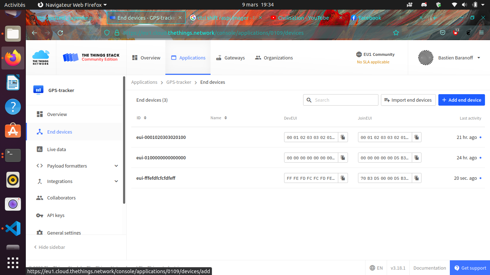
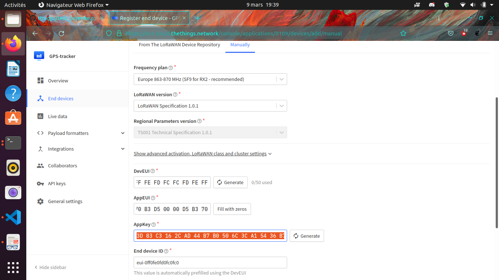
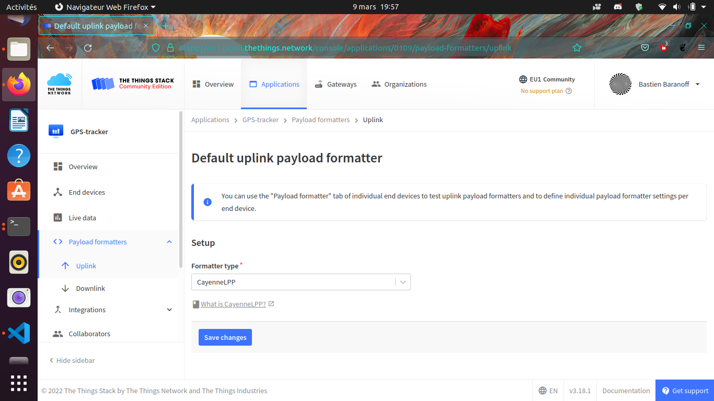
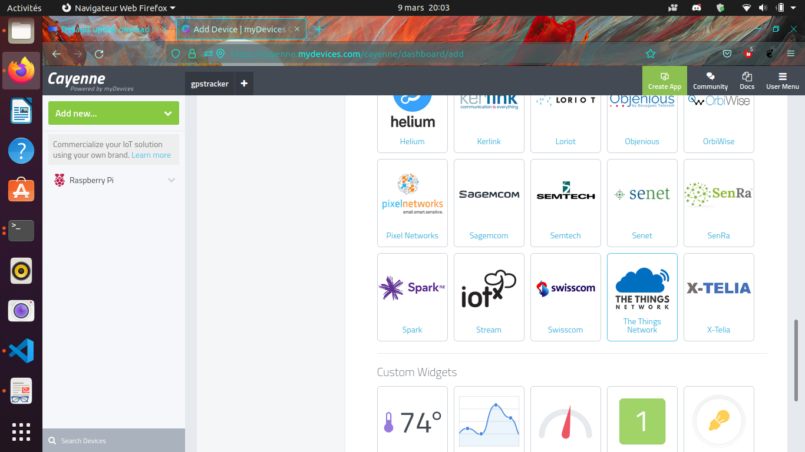
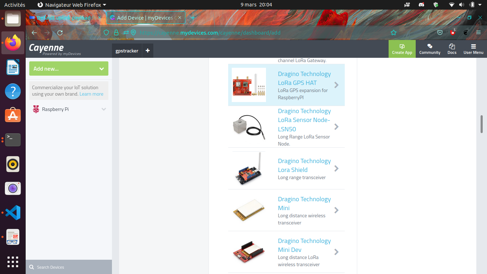
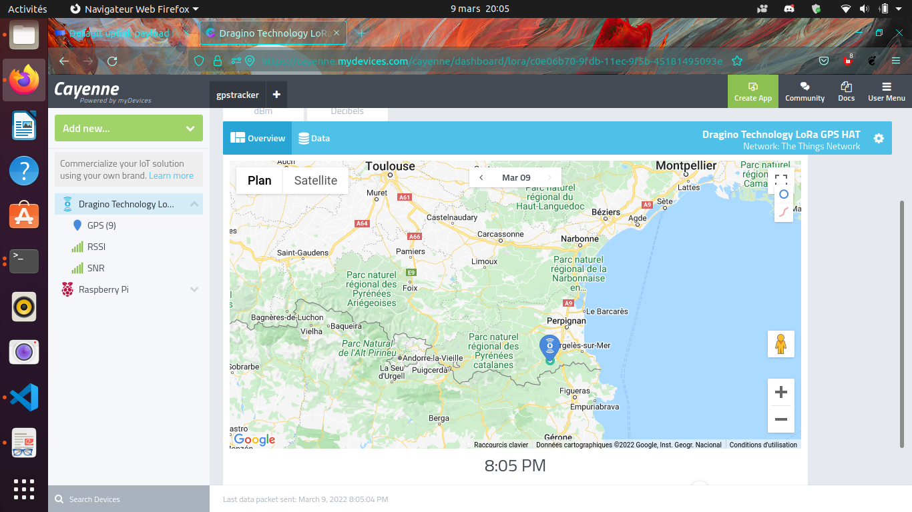

Un objet connecté Raspberry Pi + GPS + HAT LoRa Dragino qui remonte sa position en LoRaWAN jusqu’à The Things Network (TTN), visualisée en direct sur Cayenne — portée kilométrique, consommation minime.
{kind=link}
Architecture
flowchart LR
GPS["GPS (gpsd)"] --> RPI["Raspberry Pi<br/>+ HAT LoRa Dragino"]
RPI -->|"LoRaWAN (OTAA)"| GW["Passerelle Dragino"]
GW -->|"UDP 1700"| TTN["The Things Network<br/>eu1.cloud.thethings.network"]
TTN -->|"intégration"| CAY["Cayenne<br/>(carte GPS live)"]Image ISO prête à l’emploi : Google Drive.
1. La passerelle Dragino → TTN
**Astuce réseau (UPVD).** Le port **1700** (passerelle → TTN) est souvent bloqué
par les pare-feux d'établissement. La passerelle Dragino est donc connectée à
Internet **via WiFi** (partage de connexion smartphone), qui laisse passer le 1700.
- Alimenter la passerelle (USB-C 5 V / 2 A) → un réseau WiFi
dragino-XXXXXXapparaît ; s’y connecter (mot de passedragino+dragino). - Ouvrir
http://10.130.1.1(identifiants par défautroot/dragino) et connecter la Dragino, en client WiFi, à votre box ou partage smartphone. - Relever le Gateway EUI (onglet LoRa), choisir
TTN v3 et le serveur
eu1.cloud.thethings.network.
{kind=link}
{kind=link}
Côté TTN, créer la passerelle avec ce Gateway EUI,
un ID unique, et le serveur eu1.cloud.thethings.network. La
passerelle est alors connectée au réseau LoRaWAN.
{kind=link}
2. L’objet connecté — Raspberry Pi
2.1 Carte SD
Avec Raspberry Pi Imager
(sudo snap install rpi-imager), écrire Debian
Bullseye ; dans les options, activer SSH
(pi / raspberry), le WiFi et
le hostname raspberry.local.
{kind=link}
{kind=link}
Trouver le Pi sur le réseau puis s’y connecter :
nmap 192.168.1.1-254 -p 22 # ou : sudo arp -a
ssh pi@raspberrypi.local2.2 Paquets & GPS
sudo apt update && sudo apt upgrade
sudo apt install git device-tree-compiler python3-crypto python3-nmea2 \
python3-rpi.gpio python3-serial python3-spidev python3-configobj \
gpsd libgps-dev gpsd-clients python3-pip
pip3 install simplecayennelpp
git clone https://github.com/bbaranoff/libgps && cd libgps && make && sudo make install && sudo ldconfigConfigurer gpsd (/etc/default/gpsd) sur
le port série, puis activer l’UART et le SPI dans
/boot/config.txt :
# /etc/default/gpsd
START_DAEMON="true"
DEVICES="/dev/ttyAMA0"
GPSD_OPTIONS="-n"# /boot/config.txt
enable_uart=1
dtoverlay=miniuart-bt
dtoverlay=spi-gpio-csCompiler l’overlay SPI du HAT Dragino :
git clone https://github.com/computenodes/dragino && cd dragino/overlay
dtc -@ -I dts -O dtb -o spi-gpio-cs.dtbo spi-gpio-cs-overlay.dts
sudo cp spi-gpio-cs.dtbo /boot/overlays/ && sudo reboot2.3 Script d’émission — GPS → CayenneLPP → LoRaWAN
test_cayenne.py lit la position via
gpsd, l’emballe au format CayenneLPP,
et l’émet en LoRaWAN :
import gpsd, binascii
from dragino import Dragino
from simplecayennelpp import CayenneLPP
gpsd.connect()
p = gpsd.get_current()
lpp = CayenneLPP(); lpp.addGPS(1, p.lat, p.lon, p.alt)
payload = list(lpp.getBuffer())
D = Dragino("/home/pi/dragino/dragino.ini")
D.join()
while not D.registered():
print("Waiting for JOIN ACCEPT"); sleep(2)
D.send_bytes(payload) # position envoyéePlanifié chaque minute par cron
(* * * * * /home/pi/gpscron).
2.4 Clés LoRaWAN (OTAA)
Dans /home/pi/dragino/dragino.ini, mode
OTAA avec DevEUI / AppEUI / AppKey
(clé à haute entropie, attention à l’ordre MSB/LSB
entre le Pi et TTN) :
auth_mode = otaa
deveui = 0xFF,0xFE,0xFD,0xFC,0xFC,0xFD,0xFE,0xFF
appeui = 0x70,0xB3,0xD5,0x00,0x00,0xD5,0xB3,0x70
appkey = 0x3D,0x83,0xC3,0x16,0x2C,0xAD,0x44,0xB7,0xB0,0x50,0x6C,0x3C,0xA1,0x54,0x36,0xB7
spreading_factor = 73. Enregistrer l’end-device sur TTN
Application → Create, puis End devices → + Add, en reportant les mêmes DevEUI / AppEUI / AppKey. Choisir le format CayenneLPP.
  
{kind=link}
{kind=link}
{kind=link}
**Faire accrocher le GPS.** Mettre le Pi à l'heure (`sudo ntpdate fr.pool.ntp.org`),
le sortir en extérieur, **retirer le jumper Tx** de la Dragino et attendre le **fix
3D** (LED verte clignotante), puis **remettre le jumper Tx**.
Les trames remontent alors sur TTN :
{kind=link}
4. Visualiser sur Cayenne
Sur mydevices.com, créer un compte Cayenne, sélectionner The Things Network, ajouter un Dragino RPi Hat avec son DevEUI.
  
{kind=link}
{kind=link}
{kind=link}
Position GPS en direct sur la carte. 🛰️
→ Dépôts : ttn-gps ·
lora
(install ChirpStack + ThingsBoard) · libgps.
ADS-B — recevoir les avions
ADS-B (Automatic Dependent Surveillance–Broadcast) : chaque avion diffuse en clair sa position à 1090 MHz, sans authentification ni chiffrement. Un simple SDR suffit pour tout recevoir — et la même ouverture rend, en principe, l’injection d’aéronefs fantômes possible.
{kind=link}
Recevoir
Avec une RTL-SDR (~10 €) et dump1090 :
# décodage Mode S / ADS-B + carte temps réel (http://localhost:8080)
dump1090 --interactive --net
# antenne accordée 1090 MHz ; un filtre SAW améliore nettement la portéeflowchart LR
A["Avions"] -->|"1090 MHz (en clair)"| SDR["RTL-SDR"]
SDR --> D["dump1090"]
D --> M["carte temps réel"]Les trames décodées livrent l’ICAO (identifiant 24 bits), l’indicatif, l’altitude, la vitesse, le cap et la position (encodée en CPR) — tracés en direct sur une carte, à la manière d’un Flightradar maison.
Le point de sécurité
L’ADS-B remplace peu à peu le radar secondaire, mais rien n’authentifie l’émetteur :
- écoute passive triviale (surveillance du ciel local sans aucun accès) ;
- spoofing — injecter des trames d’aéronefs inexistants est réalisable avec un SDR émetteur ; à ne démontrer qu’en laboratoire / bande de test, jamais sur l’air réel.
→ Outils : dump1090
· software-defined-radio.
Vue d’ensemble : Abstract radio.